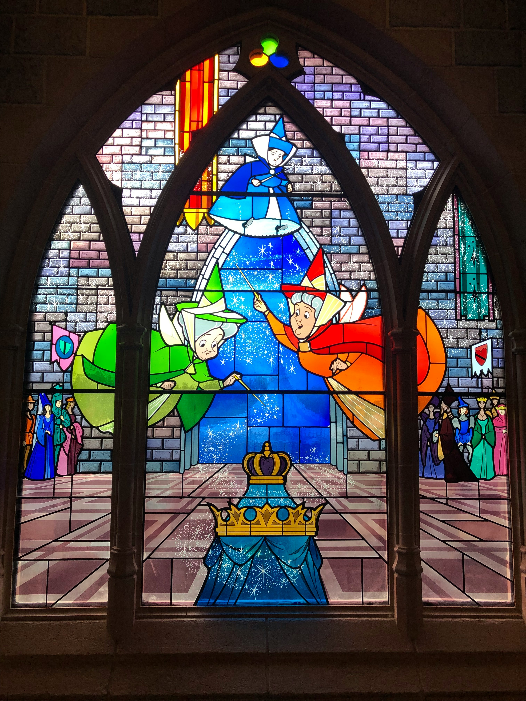

<!doctype html>
<html>
<head>
<meta charset="utf-8">
<title>Untitled Document</title>
</head>
</html>
<link
href= "https://fonts.googleapis.com/css2?family=Dancing+Script:wght@400..700&family=Roboto+Serif:ital,opsz,wght@0,8..144,100..900;1,8..144,100..900&family=Roboto:ital,wght@0,100..900;1,100..900&display=swap" 
rel= "stylesheet">
<link href="https://fonts.googleapis.com/css2?family=New+Rocker&family=Sorts+Mill+Goudy:ital@0;1&display=swap" rel="stylesheet">

<style> 
	#page {
		width: 928px;
		height: 1228px;
		background: white;
		margin: 0 auto;
		//padding: 48px;
		border: 1px solid darkgray;
		box-shadow 2px 3px 6px darkgray;
	} h1 { 
		font-family: 'Dancing Script';
		font-size: 48pt;
		line-height: 1.4em;
		text-align: left;
		color: darkolivegreen;
	} h2 { 
		font-family: 'Dancing Script';
		font-size: 24pt;
		line-height: 1.4em;
		text-align: left;
		color: royalblue;
	} h3 {
		font-family: 'New Rocker';
		font-size: 15pt;
		line-height: 1.4em;
		text-align: left;
		color: royalblue;
	} p {
		font-family:'New Rocker';
		font-size: 14pt;
		line-height: 1.4em;
		text-align: left;
		width: 848px;
		margin: 0 auto;
		color: darkslateblue;
	} body {
		background-image: url("mackenzie-mynhier-YSmlF4G8ysA-unsplash.jpg");
	} .floated-img { 
		margin: 0px 24px 12px 0;
		border: 1px solid dimgray;
		box-shadow: 2px 3px 6px darkgray;
		width: 464px;
		float: left;
	} .banner-img { 
		width: 100%;
	} animation-img {
		width: 100%;
	} @keyframes {
		0% {left: 0;}
		100% {left: 120vw;}
	} #rose {
		animation: rose;
		animation-duration: 5s;
		animation-fill-mode: forwards;
		animation-timing-function: ease-in;
		
	}
</style>


<body>
	<div id="page">
		

<p>
	<h1> Sun, Moon & Talia</h1>
	<h2> The Original Sleeping Beauty</h2>
	<h3> Images from Unsplash and Canva</h3>
	<p>
		Meanwhile, two little twins, one a boy and the other a girl, who looked like two little jewels, wandered, from I know not where, into the palace and found Talia in a trance. At first they were afraid because they tried in vain to awaken her; but, becoming bolder, the girl gently took Talia’s finger into her mouth, to bite it and wake her up by this means; and so it happened that the splinter of flax came out. Thereupon she seemed to awake as from a deep sleep; and when she saw those little jewels at her side, she took them to her heart, and loved them more than her life; but she wondered greatly at seeing herself quite alone in the palace with two  children, and food and refreshment brought her by unseen hands.</p>
</body>
